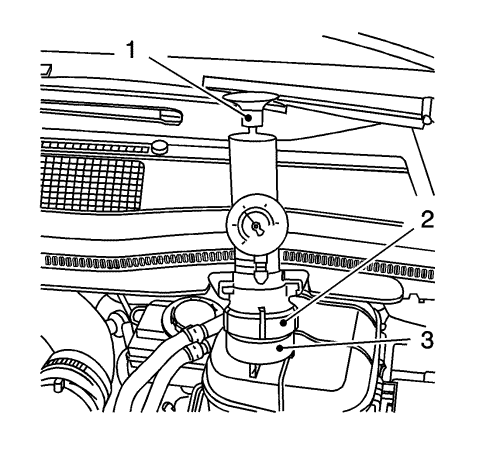

Advertencia: Sometida a presión, la temperatura de la solución del radiador puede ser considerablemente mayor, sin llegar a hacer ebullición. Si se quita el tapón del radiador con el motor caliente (la presión será alta), la solución hará ebullición al instante con fuerza explosiva. La solución se desparramaría por el motor y los guardabarros, salpicando a la persona que quitó el tapón. Lo cual podría causar graves lesiones personales. No se recomienda en ningún momento el uso de anticongelante inflamable, como el alcohol. El anticongelante inflamable podría causar incendios graves.
Advertencia: Para que uno no se queme, no quite el tapón del radiador mientras el motor y el radiador estén calientes. Si se quita demasiado pronto el tapón, podrá salir líquido y vapor hirviendo a presión.
- Abra el capó.
- Desmonte el tapón del depósito de expansión del refrigerante.

- Compruebe el nivel del refrigerante.
Eche refrigerante hasta la marcha COLD (Frío) si es necesario.
- Tire del soporte del vaso de expansión de refrigerante en dirección a la batería.
Nota: Siga las instrucciones del fabricante.
- Monte el comprobador del sistema de refrigerante (1) con el adaptador EN 471 (2) y el adaptador EN 6327 A (3) en el vaso de expansión de refrigerante.
- Aplique aproximadamente 100 kPa (15 psi) en el sistema de refrigeración.
- Compruebe si hay fugas en el sistema de refrigeración.
- Desmonte el comprobador del sistema de refrigeración.
| • | Desmonte el comprobador del sistema de refrigeración con el adaptador EN 471 |
- Monte el tapón del depósito de expansión del refrigerante.
- Deslice el vaso de expansión del refrigerante hacia el soporte.
- Cierre el capó.